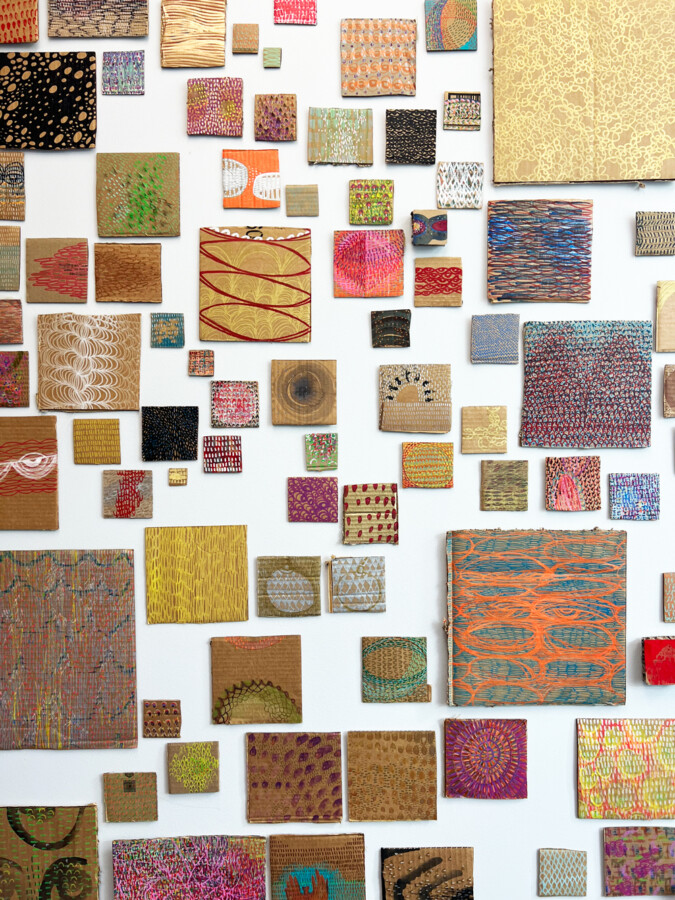

Debra Kayes: I seem to be a verb.
Debra Kayes:
I seem to be a verb.
Mar 7 – Apr 18, 2026
Opening Reception: Sat, Mar 7, 1 – 4 pm
Exhibition Walk-Through / Cardboard Painting Workshop: Apr 18, 2 – 3 pm
Tiger Strikes Asteroid, Chicago is pleased to present I seem to be a verb., a solo exhibition by Debra Kayes that packs the space from floor to ceiling with paintings on recycled cardboard, found materials, and canvas. Developed over several years, these works are rooted in lived experience, bodily rhythms, and cycles of repetition and care.
The project began in May of 2020 during lockdown, following the birth of Debra’s second child, when an accumulation of delivery boxes became a studio resource. What started as “crappy art on crappy cardboard,” made in brief moments between caregiving, has continued as a sustained practice. Through both sudden loss, including the death of her brother, and personal gains, such as finding steadiness and purpose in a family and a profession she loves, Debra uses small gestures to make a web of interactions.
Debra’s work centers on bodily action and repetition—caregiving, repairing, grieving, building, and picking up—expressed through recurring imagery of eyes, hands, webs, patterns, and layered surfaces; these works additionally suggest a broader community struggling. The exhibition takes its title from R. Buckminster Fuller’s idea of life as a process rather than an object. In I seem to be a verb., Debra Kayes considers how meaning accumulates through repeated motion, adaptation, and persistence over time.